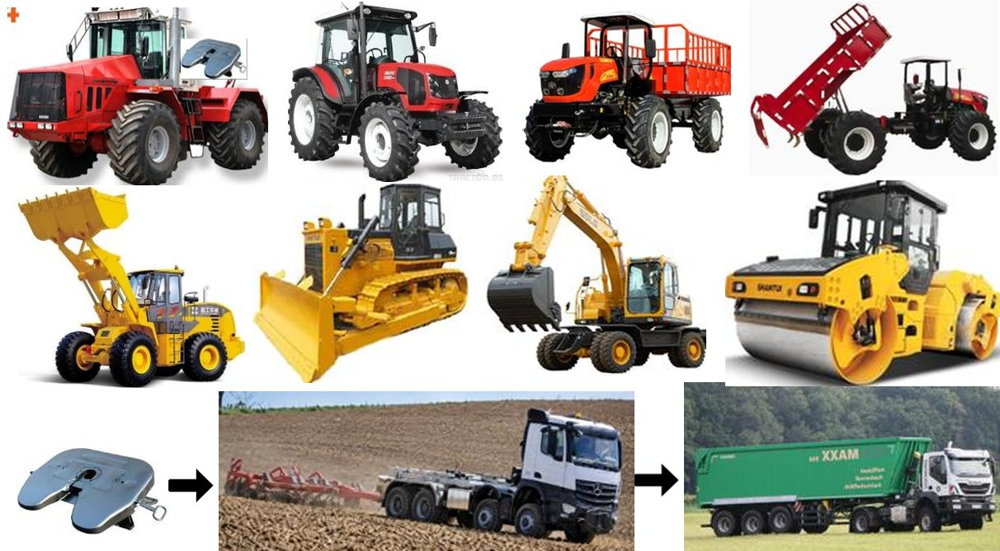

ECOES КОНВЕРСИЯ НА СЕЛСКОСТОПАНСКА И СТРОИТЕЛНА ТЕХНИКА
Вземете оферта за конверсия на селскостопанска и строителна техника- AGRITRUCK

Селскостопанските, строителните и другите специализирани машини, които работят в стационарен или полустационарен режим или се движат с ниска скорост, имат специфични експлоатационни характеристики, свързани с висок разход на дизелово гориво. При стационарна работа дизеловият двигател продължава да работи и да изразходва гориво дори когато работните механизми бездействат.
Липсата на одометри и разходомери за гориво, съчетана с високите експлоатационни разходи, създава идеални условия за кражби на дизел — често достигащи или надвишаващи 30%. При машините с електрическа задвижваща система ECOES основният електродвигател не работи и не консумира енергия, когато работните механизми не са включени. Кражбата на гориво е невъзможна при машините, оборудвани с ECOES.
Много строителни машини имат хидравлични трансмисии, които са изключително подходящи за електрическо задвижване. При тракторите и другата селскостопанска техника се запазва съществуващата скоростна кутия заедно с фабричните предавателни числа и вала за отбор на мощност (PTO), който задвижва други прикачни и навесни машини.
ECOES конверсията на съществуваща употребявана селскостопанска и строителна техника носи значителни икономически ползи както по отношение на инвестициите, така и при експлоатацията, тъй като избягва покупката на скъпа нова техника чрез оползотворяване на машини, които вече не се използват или са с повреден двигател. Чрез процеса на ECOES конверсия и монтажа на нова електрическа задвижваща система тези по-стари селскостопански и строителни машини се съживяват и получават нов експлоатационен живот от още 10 до 15 години.
AGRITRUCK е многофункционално превозно средство, което съчетава възможностите на трактор за полска работа с тези на камион за движение по пътища и магистрали. Оборудвано е със заден хидравличен навесен механизъм и вал за отбор на мощност (PTO) с обороти 540 об/мин и 1000 об/мин. Дизайнът на това превозно средство е защитен с патент от Службата на Европейския съюз за интелектуална собственост (EUIPO).
Използването на електрическия ECOES AGRITRUCK създава силен положителен синергичен ефект благодарение на двойните икономически и експлоатационни ползи, които значително трансформират икономическата ефективност на селскостопанската дейност.
AGRITRUCK може да бъде хомологиран и регистриран като превозно средство от категории N1, N2 и N3 или като трактор от категории T1a и T1b съгласно Регламент (ЕС) № 167/2013.
Регистрирането на AGRITRUCK като трактор дава възможност да се ползват данъчни и митнически преференции, както и други субсидии за селскостопанска техника, предоставяни от различни национални правителства.
ТРАНСФОРМИРАЙТЕ ИКОНОМИЧЕСКАТА ЕФЕКТИВНОСТ НА ВАШИЯ БИЗНЕС, КАТО ИЗПОЛЗВАТЕ ЕЛЕКТРИЧЕСКАТА СЕЛСКОСТОПАНСКА И СТРОИТЕЛНА ТЕХНИКА ECOES.
Вземете оферта